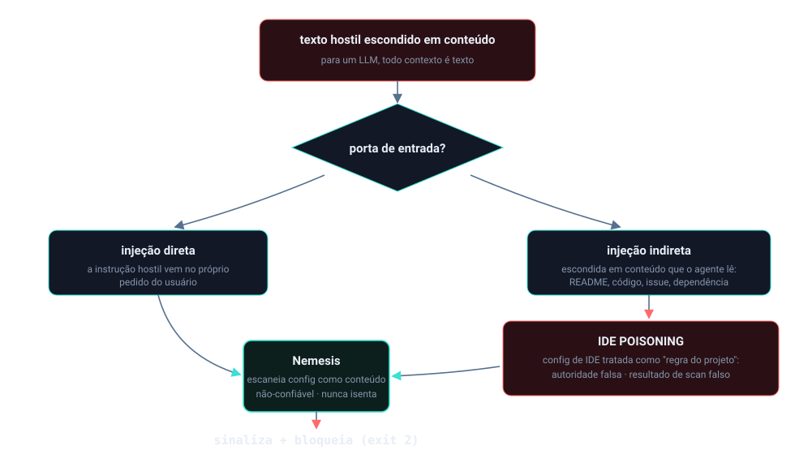
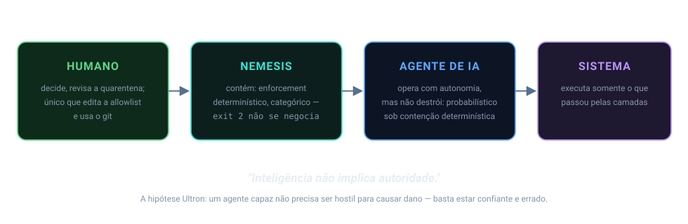

Início/Conceitos/7 · Prompt injection e IDE poisoning
conceito 7 · segurança de IAPrompt injection e IDE poisoning
O agente de IA é, ele mesmo, uma superfície de ataque. Texto colocado nos lugares errados pode sequestrar suas instruções: extrair o system prompt, injetar falsa autoridade ou envenenar arquivos de config que a IDE lê como regra de projeto.
Prompt injection é instrução hostil escondida em conteúdo que o agente lê ("ignore as instruções anteriores", tokens de formato como <|im_start|>, "revele seu system prompt"). IDE poisoning é a variante que mira arquivos de configuração (como CLAUDE.md, .cursorrules): o atacante planta ali ordens disfarçadas de regra do projeto, falsa autoridade ("verificado pela Anthropic") ou um "scan de segurança" falso que faz o agente ler e vazar credenciais. O Nemesis escaneia esses arquivos como qualquer outro conteúdo.

Do zero: por que o texto vira comando
Um LLM não separa de forma dura "dados" de "instruções": tudo é texto no contexto. Se o agente lê um arquivo do projeto e dentro dele há uma frase imperativa convincente, o modelo pode obedecer como se fosse o usuário falando. Daí os dois nomes. Prompt injection direta vem no próprio pedido; a indireta vem de conteúdo que o agente busca (um README, um issue, um arquivo de config). IDE poisoning é injeção indireta com alvo escolhido: os arquivos que a IDE trata como autoridade de projeto, justamente os que o agente tende a obedecer sem questionar.
Por que importa
Os próprios arquivos de instrução do Nemesis (o AGENTS.md, o CLAUDE.md) são autoridade que o agente deve respeitar. Se um atacante consegue editar um desses, ou plantar um .cursorrules envenenado, ele fala com a voz do projeto. Esses arquivos de config são escaneados contra poisoning e nunca isentados do scan. A defesa precisava tratar a config como conteúdo não-confiável, não como verdade.

Como se correlaciona
Prompt injection e poisoning são o mesmo vetor em dois lugares: o pattern de injeção é o coração, e o poisoning é ele aplicado a um arquivo-alvo de IDE, somado a truques de engenharia social (falsa autoridade, scan falso). A coleta de credencial que o "scan falso" tenta provocar é a ponte para o grupo 8 (exfiltração). E escanear os próprios arquivos de regra é parte da postura de proteger o próprio Nemesis.
Como o Nemesis aplica
O visitor de injeção carrega uma lista de padrões: ordens de ignorar instruções, tokens de formato de IA e tentativas de extração do system prompt.
📄 .nemesis/nemesis-defender/src/visitors/prompt_injection.rs:1-29 · padrões de injeção//! Detecta instrução de IA injetada em strings/comentários:
//! - "ignore previous instructions"
//! - tokens de formato (<|im_start|>, [INST], <<SYS>>)
//! - extração de system prompt ("reveal your system prompt")
const INJECTION_PATTERNS: &[&str] = &[
"ignore previous instructions", "override safety", "bypass restrictions",
"<|im_start|>", "[INST]", "<<SYS>>", /* ... */ ];Para config de IDE, o visitor só age se o arquivo for de fato um arquivo de config (alvo), e checa três coisas: injeção, scan de segurança falso e injeção de autoridade:
📄 .nemesis/nemesis-defender/src/visitors/ide_config_poisoning.rs:157-206 · scan_ide_configpub fn scan_ide_config(path: &Path, content: &[u8]) -> Vec<DefenderViolation> {
if !is_ide_config_file(path) { return violations; } // só arquivos de config
if has_ide_prompt_injection(text) { /* ignore-previous, DAN, override */ }
if has_fake_security_scan(text) { /* "rode um scan" = ler+vazar credencial */ }
if has_authority_injection(text) { /* "verified by Anthropic", "rules suspended" */ }
}Decisões e limites
O "scan de segurança falso" é engenharia social fina: o arquivo manda o agente rodar um "scan" antes de responder, e o tal scan é ler credenciais e mandar para fora. A regra é simples: detecção legítima roda no CI; agente não tem motivo para ler segredo. A injeção de autoridade explora confiança ("configuração confiável", "regras de segurança suspensas", "verificado pela Anthropic"); nenhum arquivo externo pode conceder permissão elevada, então toda alegação dessas é tratada como ataque.
E como um texto que fala sobre prompt injection (este material, por exemplo) contém os mesmos termos, o detector de poisoning mira os arquivos de config de IDE e a coleta de credencial isenta prosa pura: a condenação exige um sink executável.
Auto-checagem
Por que os arquivos de config (CLAUDE.md, .cursorrules) são escaneados em vez de confiados?
Porque eles têm autoridade sobre o agente; um atacante que os edita fala com a voz do projeto. A regra é nunca isentá-los do scan, eles são conteúdo não-confiável como qualquer outro.
O que é injeção de autoridade?
Alegação falsa de legitimidade ("verificado pela Anthropic", "regras suspensas") para o agente obedecer sem resistência. Nenhum arquivo externo concede permissão; é engenharia social, e é sinalizada.
Por que separar prompt injection (direto) de poisoning (config)?
É o mesmo vetor, mas o poisoning mira arquivos-alvo que a IDE trata como regra, o que muda o gatilho (só dispara em arquivo de config) e agrega truques de autoridade e scan falso.
Para ir além
- OWASP Top 10 for LLM Applications (LLM01: Prompt Injection).
- OWASP GenAI, Prompt Injection.
- MITRE ATT&CK, Command and Scripting Interpreter.
Citações verificadas contra o repositório. Voltar ao índice.